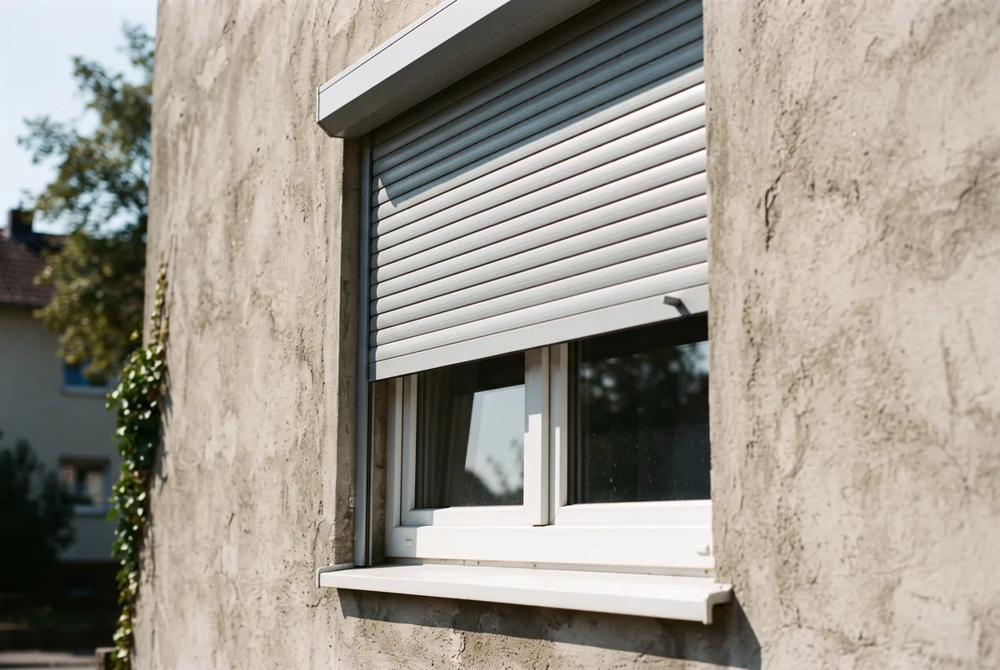
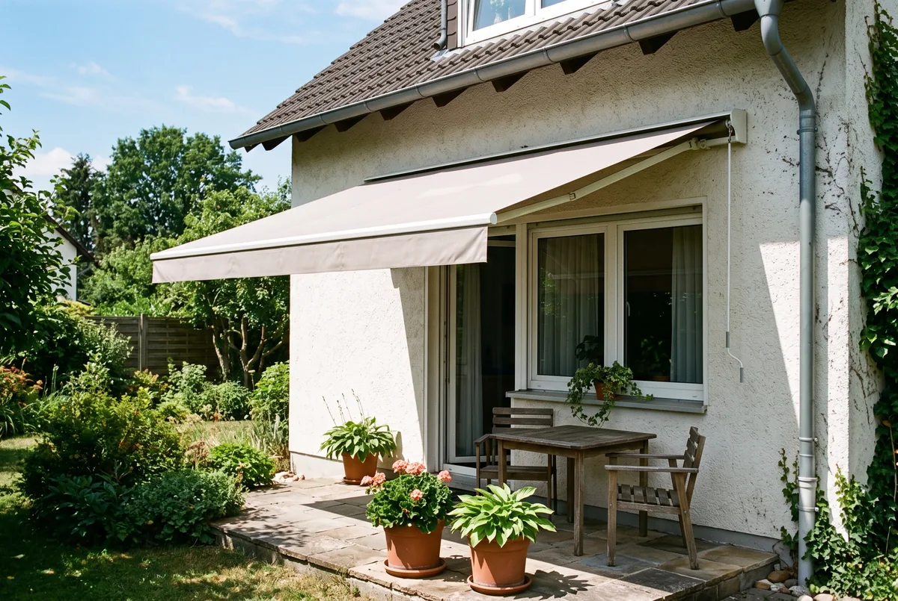
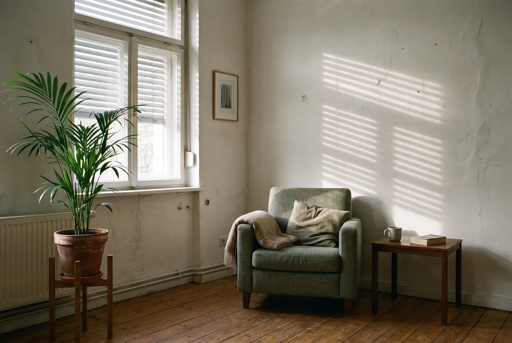

Inhaltsverzeichnis
- Warum sommerlicher Wärmeschutz immer wichtiger wird
- Der Rechtsrahmen – GEG § 14 und § 51
- Wann der Nachweis Pflicht ist – und wann nicht
- Nachweisweg 1 – das Sonneneintragskennwert-Verfahren
- Nachweisweg 2 – die thermische Gebäudesimulation
- Die entscheidenden Kennwerte (g-Wert, FC, g_total)
- Wirksame Maßnahmen nach Rangfolge
- Förderung für außenliegenden Sonnenschutz (BEG EM)
- Wenn der Nachweis nicht erfüllt wird – und wer ihn erstellt
- Fazit und nächster Schritt
- Häufige Fragen
Das Wichtigste in Kürze
- Es ist eine Pflicht: Für Neubauten verlangt das GEG in der Regel einen Nachweis des sommerlichen Wärmeschutzes nach DIN 4108-2; im Bestand greift die Anforderung typischerweise bei Erweiterungen ab rund 50 m².
- Zwei Wege zum Nachweis: das vereinfachte Sonneneintragskennwert-Verfahren (Svorh ≤ Szul) oder die genauere thermische Gebäudesimulation über Übertemperatur-Gradstunden.
- Bagatellregel: Bei kleinem Fensterflächenanteil – oft rund 35 % genannt – und wirksamem außenliegendem Sonnenschutz kann der Nachweis entfallen; der genaue Wert variiert je Normfassung.
- FC ist nicht der g-Wert: Der Abminderungsfaktor FC beschreibt die Wirkung des Sonnenschutzes, der g-Wert die Verglasung. Beides ergibt zusammen g_total = g × FC.
- Außen schlägt innen: Nur außenliegender Sonnenschutz erreicht die niedrigen FC-Werte (etwa 0,3 oder darunter), die die Norm für den vereinfachten Nachweis verlangt.
- Förderung: Außenliegender Sonnenschutz ist als BEG-Einzelmaßnahme mit 15 % Grundfördersatz förderfähig, innenliegender nicht. Alle Angaben Stand 15. Juli 2026, ohne Gewähr – Details in der Hinweisbox am Ende.
Einführung – warum sommerlicher Wärmeschutz immer wichtiger wird
Lange galt in Deutschland vor allem der winterliche Wärmeschutz als das eigentliche Thema der Bauphysik: Heizkosten senken, Behaglichkeit in der kalten Jahreszeit sichern. Doch die Sommer haben sich verändert. Hitzeperioden mit mehreren Tagen über 30 Grad sind vielerorts zur Regel geworden, und Tropennächte, in denen die Außentemperatur nicht mehr unter 20 Grad fällt, nehmen zu. Damit rückt eine Frage in den Vordergrund, die früher als Randnotiz galt: Wie verhindert man, dass sich Wohnräume unzumutbar aufheizen?
Der entscheidende Punkt ist physikalisch. Die kritische Wärmemenge kommt an einem Sommertag nicht durch die Wand, sondern durch das Glas. Ein besonntes Fenster wirkt über Stunden wie eine Heizfläche, die niemand abschalten kann. Wer diese Energie nicht vor der Scheibe stoppt, muss sie hinterher mühsam wieder aus dem Raum schaffen – mit Lüftung, mit Ventilatoren oder, teuer und stromintensiv, mit Kältetechnik.
Genau hier setzt der Gesetzgeber an. Damit neue Gebäude im Sommer nutzbar bleiben, ohne dass von Anfang an eine Klimaanlage eingeplant werden muss, verlangt das Gebäudeenergiegesetz für viele Bauvorhaben einen rechnerischen Nachweis. Er soll sicherstellen, dass die Räume auch bei Hitze eine zumutbare Temperatur halten. Was das konkret bedeutet, welche Paragrafen dahinterstehen und wie der Nachweis in der Praxis geführt wird, klären die folgenden Abschnitte. Vorweg das Wichtigste: Der sommerliche Wärmeschutz ist kein bürokratischer Selbstzweck, sondern die Grundlage dafür, dass ein Gebäude über seine gesamte Lebensdauer komfortabel und energieeffizient bleibt.
Der Rechtsrahmen – GEG § 14 und § 51
Die rechtliche Grundlage bildet das Gebäudeenergiegesetz (GEG). Nach der einschlägigen Regelung – in der Regel § 14 GEG in Verbindung mit DIN 4108-2 – müssen Neubauten so geplant und errichtet werden, dass die Anforderungen an den sommerlichen Wärmeschutz eingehalten werden. Das Gesetz selbst nennt dabei keine konkreten Rechenwerte, sondern verweist auf die technische Norm: Die Details, Grenzwerte und Verfahren stehen in DIN 4108-2. Das GEG legt also fest, dass nachgewiesen werden muss, die Norm sagt, wie.
Für den Gebäudebestand kommt eine zweite Vorschrift ins Spiel. Über § 51 GEG wird die Anforderung auf bestehende Gebäude erstreckt, wenn diese in nennenswertem Umfang erweitert oder ausgebaut werden. Typisch ist eine Schwelle bei rund 50 Quadratmetern hinzukommender oder geänderter Nutzfläche – etwa beim Dachgeschossausbau, bei einem Anbau oder bei der Aufstockung. In diesen Fällen ist für die neu geschaffenen oder wesentlich geänderten Räume der sommerliche Wärmeschutz nachzuweisen, so als handele es sich um einen Neubau.
Wichtig ist die Einordnung: Diese Angaben zu Paragrafen und Schwellen geben die übliche Praxis wieder. Der genaue Wortlaut, die exakte Flächenschwelle und ihre Auslegung können je nach Bauvorhaben und Bundesland abweichen. Wir formulieren deshalb bewusst „in der Regel" und „nach GEG in Verbindung mit DIN 4108-2" – die konkrete Rechtslage für Ihr Vorhaben gehört in die Hände einer Fachperson, die Objekt, Bauantrag und Landesbauordnung zusammen betrachtet. Was in jedem Fall gilt: Wo die Pflicht greift, ist der Nachweis Teil der Planungsunterlagen und sollte nicht erst nachträglich, sondern von Anfang an mitgedacht werden. Denn nachträglicher Sonnenschutz ist fast immer teurer als der von vornherein eingeplante.
Wann der Nachweis Pflicht ist – und wann nicht
Ob Sie einen Nachweis brauchen, hängt an der Art des Bauvorhabens. Die Faustregel lautet: Neubau ja, reine Bestandssanierung ohne Erweiterung in der Regel nein, größere Erweiterung im Bestand wieder ja. Bei einem Neubau ist der Nachweis grundsätzlich Pflichtbestandteil der Planung. Bei einem Anbau oder Dachausbau, der die genannte Flächenschwelle überschreitet, gilt er für die betroffenen Räume ebenfalls. Wer dagegen im Bestand nur Fenster tauscht oder die Fassade dämmt, ohne die Nutzfläche zu erweitern, muss den sommerlichen Wärmeschutz formal meist nicht nachweisen.
Innerhalb der nachweispflichtigen Fälle gibt es zusätzlich eine Erleichterung für Wohngebäude, die sogenannte Bagatell- oder Vereinfachungsregel. Vereinfacht ausgedrückt kann auf den rechnerischen Nachweis verzichtet werden, wenn zwei Bedingungen zusammenkommen: Der Fensterflächenanteil des kritischsten Raums bleibt klein – häufig genannt wird ein Wert von rund 35 Prozent bezogen auf die Grundfläche des Raums –, und die nach Osten, Süden und Westen orientierten Fenster verfügen über einen wirksamen außenliegenden Sonnenschutz. Der genaue Prozentwert und die weiteren Randbedingungen hängen von der jeweils gültigen Normfassung ab; wir nennen die 35 Prozent deshalb als Orientierung und nicht als feste Grenze.
Für die Praxis heißt das: Selbst wenn eine Pflicht besteht, ist der aufwendige Rechennachweis nicht immer nötig. Kleine, kompakt verglaste Räume mit Rollläden oder Raffstores fallen oft unter die Vereinfachung. Große, nach Süden oder Westen voll verglaste Wohn-Ess-Bereiche dagegen sprengen den Bagatellrahmen fast immer und brauchen einen echten Nachweis. Ob Ihr Vorhaben nachweispflichtig ist und ob die Vereinfachungsregel greift, lässt sich seriös nur am konkreten Grundriss beurteilen – genau das prüfen wir im Rahmen der Planung mit.
Nachweisweg 1 – das Sonneneintragskennwert-Verfahren
Ist ein echter Nachweis nötig, stehen nach DIN 4108-2 zwei Verfahren zur Wahl. Der Regelfall ist das vereinfachte Sonneneintragskennwert-Verfahren. Die Idee dahinter ist ein Soll-Ist-Vergleich zweier Kennzahlen. Für den kritischen Raum wird ein vorhandener Sonneneintragskennwert Svorh berechnet, der beschreibt, wie viel Sonnenenergie tatsächlich in den Raum gelangt. Ihm gegenüber steht ein zulässiger Kennwert Szul, den die Norm aus Randbedingungen wie Bauart, Nachtlüftung und Fensterorientierung ableitet. Der Nachweis gilt als erfüllt, wenn der vorhandene Wert den zulässigen nicht überschreitet, also Svorh ≤ Szul.
In den vorhandenen Kennwert fließt vor allem ein, wie groß die Fensterflächen im Verhältnis zur Raumfläche sind, in welche Himmelsrichtung sie zeigen, welchen Gesamtenergiedurchlassgrad die Verglasung inklusive Sonnenschutz hat und wie viel speicherfähige Masse der Raum besitzt. Der zulässige Kennwert wiederum steigt zum Beispiel, wenn eine wirksame Nachtlüftung möglich ist oder das Gebäude in einer kühleren Sommerklimaregion steht. Deutschland ist dafür in drei Sommerklimaregionen A, B und C eingeteilt, denen grob zumutbare Innentemperaturen von etwa 25, 26 und 27 Grad zugeordnet sind – je nach Region und Normfassung.
Der Charme des Verfahrens liegt in seiner Handhabbarkeit: Es kommt ohne aufwendige dynamische Berechnung aus und lässt sich mit überschaubarem Aufwand für die kritischen Räume eines Gebäudes führen. Seine Grenze zeigt sich bei komplexen oder stark verglasten Objekten. Wenn große Glasflächen, ungünstige Orientierungen oder architektonische Besonderheiten dazu führen, dass der vereinfachte Nachweis nicht mehr gelingt, muss auf das genauere Verfahren gewechselt werden. Genau das ist der Übergang zur thermischen Gebäudesimulation.
Nachweisweg 2 – die thermische Gebäudesimulation
Wenn das vereinfachte Verfahren an seine Grenzen stößt, erlaubt DIN 4108-2 als zweiten Weg die thermische Gebäudesimulation. Sie ist das genauere, aber auch aufwendigere Verfahren. Statt mit statischen Kennwerten zu rechnen, wird das Verhalten des Gebäudes über ein ganzes Sommerhalbjahr dynamisch nachgebildet: Stunde für Stunde werden Sonnenstand, Außentemperatur, Verschattung, Speichermasse und Lüftung berücksichtigt, um den tatsächlichen Temperaturverlauf in den Räumen abzubilden.
Das Ergebnis wird über die sogenannten Übertemperatur-Gradstunden ausgewertet. Vereinfacht gesagt zählt die Simulation, wie oft und wie stark die zumutbare Innentemperatur überschritten wird: Jede Stunde, in der der Raum zu warm ist, geht mit der Höhe der Überschreitung in eine Summe ein, gemessen in Kelvinstunden pro Jahr. Diese Summe darf einen zulässigen Grenzwert nicht überschreiten – für Wohngebäude wird in der Regel ein Wert von 1.200 Kelvinstunden pro Jahr genannt, für Nichtwohngebäude ein niedrigerer Wert. Bleibt das Gebäude darunter, gilt der Nachweis als erfüllt.
Der Aufwand lohnt sich vor allem dort, wo das vereinfachte Verfahren zu streng oder zu grob ist. Stark verglaste Architektur, große Fensterfronten, Wintergärten oder Gebäude mit ungewöhnlicher Geometrie profitieren davon, dass die Simulation die realen Verhältnisse – etwa eine wirksame Nachtlüftung oder hohe Speichermasse – differenziert abbildet. Häufig lässt sich so ein Nachweis führen, der über den pauschalen Kennwert nicht gelingen würde. Der Preis dafür ist der höhere Planungsaufwand und die Notwendigkeit einer geeigneten Simulationssoftware und Fachkenntnis. Für ein Standard-Einfamilienhaus mit moderater Verglasung ist die Simulation meist überdimensioniert; für ein anspruchsvolles, gläsernes Objekt ist sie oft der einzige Weg zum erfüllten Nachweis.
Braucht Ihr Bauvorhaben einen Nachweis?
Wir prüfen, ob für Ihren Neubau oder Ausbau ein Nachweis des sommerlichen Wärmeschutzes nötig ist, führen ihn und binden ihn in die Planung ein.
Kostenlose ErsteinschätzungDie entscheidenden Kennwerte (g-Wert, F_C, g_total)
Wer den Nachweis verstehen will, kommt an drei Kennwerten nicht vorbei. Der erste ist der g-Wert der Verglasung, auch Gesamtenergiedurchlassgrad genannt. Er beschreibt, welcher Anteil der auf das Glas treffenden Sonnenenergie nach innen gelangt. Eine übliche Zweifach- oder Dreifachverglasung hat einen g-Wert von etwa 0,6 bis 0,7 – bei 0,65 landen also rund 65 Prozent der Strahlung als Wärme im Raum. Spezielle Sonnenschutzverglasung liegt deutlich niedriger, erkauft das aber mit geringeren solaren Gewinnen im Winter.
Der zweite Kennwert ist der Abminderungsfaktor FC des Sonnenschutzes. Er ist der zentrale Wert der DIN 4108-2 und beschreibt, wie stark eine Sonnenschutzeinrichtung den Energieeintrag reduziert. Ein FC von 0,25 bedeutet, dass trotz Sonnenschutz noch 25 Prozent der Energie durchkommen, 75 Prozent also abgehalten werden. Je niedriger der Wert, desto besser der Schutz. Und hier liegt der häufigste Denkfehler: Der FC-Wert ist nicht der g-Wert. Der g-Wert beschreibt die Scheibe, der FC-Wert die Wirkung des davor liegenden Sonnenschutzes. Wer beide verwechselt, rechnet den Nachweis falsch.
Beide zusammen ergeben den dritten Wert, den Gesamtenergiedurchlassgrad g_total der Kombination aus Verglasung und Sonnenschutz. Er berechnet sich schlicht als g_total = g × FC. Ein Fenster mit g-Wert 0,6 und einem außenliegenden Raffstore mit FC = 0,25 kommt so auf einen g_total von nur 0,15 – es lässt also nur noch 15 Prozent der Sonnenenergie in den Raum. Genau dieser g_total-Wert entscheidet im Nachweis darüber, ob ein Raum den sommerlichen Wärmeschutz einhält. Die folgende Übersicht zeigt, warum die Position des Sonnenschutzes so viel ausmacht:
| Sonnenschutz-System | Position | Typischer FC-Bereich |
|---|---|---|
| Raffstore (Lamellen) | außen | rund 0,25 oder darunter |
| Rollladen | außen | etwa 0,3 |
| Textiler Screen | außen | etwa 0,25–0,4 |
| Sonnenschutzglas (ohne Behang) | in der Scheibe | niedriger g-Wert statt FC |
| Innenrollo / Plissee (hell) | innen | etwa 0,5–0,9 |
Die Werte sind Orientierungsgrößen und hängen von Produkt, Farbe und Verglasung ab; maßgeblich sind stets die geprüften Herstellerangaben und die jeweils gültige Normfassung. Die Botschaft der Tabelle bleibt aber eindeutig: Außenliegende Systeme erreichen die niedrigen FC-Werte, die der vereinfachte Nachweis verlangt, innenliegende nicht.

Wirksame Maßnahmen nach Rangfolge
Aus der Physik der Kennwerte ergibt sich eine klare Rangfolge der Maßnahmen. Sie sortiert nicht nach Beliebtheit, sondern nach Wirkung – und wer sie einhält, erfüllt den Nachweis meist mit dem geringsten Aufwand.
An erster Stelle steht der außenliegende Sonnenschutz. Rollläden, Raffstores und textile Screens fangen die Sonnenstrahlung ab, bevor sie das Glas passiert. Die Wärme entsteht damit außerhalb der thermischen Hülle und wird vom Wind abgeführt. Kein anderer Hebel senkt den Energieeintrag so stark, und nur außenliegende Systeme erreichen die niedrigen FC-Werte, die die Norm für den vereinfachten Nachweis fordert. Raffstores sind dabei oft der beste Kompromiss, weil sie das Tageslicht in den Raum lenken, ohne ihn zu verdunkeln.
An zweiter Stelle folgt die Verglasung. Wo außenliegender Sonnenschutz nicht möglich ist, senkt Sonnenschutzglas mit niedrigem g-Wert den Eintrag – allerdings ganzjährig, also auch im Winter, wenn die solare Wärme eigentlich willkommen wäre. Deshalb ist Sonnenschutzglas eine Entscheidung je nach Himmelsrichtung und kein pauschaler Standard. Danach kommt die Speichermasse: Massive Bauteile aus Beton, Ziegel oder Kalksandstein puffern Wärmespitzen und geben sie zeitverzögert wieder ab. Ergänzt wird sie durch die Nachtlüftung, die diese gespeicherte Wärme in den kühlen Nachtstunden abführt – ein Faktor, der im Nachweis den zulässigen Kennwert spürbar anhebt.
Unser Tipp: Richtig lüften bei Hitze: wann und wie Sie die Nachtkühle wirklich in die Räume holen.
Erst an letzter Stelle steht der innenliegende Sonnenschutz – Rollos, Plissees, Vorhänge. Er ist die Notlösung, wenn außen nichts geht, denn zu dem Zeitpunkt, an dem die Sonne auf den Stoff trifft, ist die Energie bereits im Raum. Ein heller, reflektierender Behang mildert den Effekt, hebt ihn aber nicht auf. Für den GEG-Nachweis reicht innenliegender Schutz in aller Regel nicht aus.
Unser Tipp: Hitzeschutz für Fenster im Vergleich: Rollladen, Raffstore, Folie und Sonnenschutzglas nebeneinander.

Förderung für außenliegenden Sonnenschutz (BEG EM)
Die gute Nachricht: Der Staat beteiligt sich an baulichem Hitzeschutz. Über die Bundesförderung für effiziente Gebäude (BEG) ist der sommerliche Wärmeschutz als Einzelmaßnahme grundsätzlich förderfähig, zuständig ist das BAFA. Gefördert wird ausdrücklich der Ersatz oder erstmalige Einbau außenliegender Sonnenschutzeinrichtungen mit optimierter Tageslicht- und Blendschutzsteuerung – gemeint ist eine automatische, zum Beispiel strahlungsabhängige Steuerung, die Sonnenschutz und Tageslichtnutzung ausbalanciert. Der Grundfördersatz beträgt nach unserem Kenntnisstand 15 Prozent der förderfähigen Ausgaben.
Beim häufig beworbenen iSFP-Bonus von zusätzlichen 5 Prozent lohnt ein genauer Blick. Für Anträge ab dem 21. Juli 2026 ist er an ein förderfähiges Mindestinvestitionsvolumen von 30.000 Euro geknüpft und wird nur auf den Betrag gewährt, der darüber hinausgeht. Für eine reine Sonnenschutz-Maßnahme, die dieses Volumen meist nicht erreicht, läuft der Bonus damit in der Regel ins Leere. Relevant wird er erst, wenn Sie den Sonnenschutz mit weiteren Maßnahmen an der Gebäudehülle bündeln. Auch die Höchstgrenzen der förderfähigen Ausgaben je Wohneinheit werden mit der Reform zum 21. Juli 2026 angepasst; welche Werte konkret gelten, hängt am Antragsdatum und ist tagesaktuell zu prüfen.
Zwei Punkte sind entscheidend. Erstens: Innenliegender Sonnenschutz wird nicht gefördert – ein weiterer Grund, von vornherein außen zu planen. Zweitens: Ohne Energieeffizienz-Experten läuft nichts. Er bestätigt die technische Förderfähigkeit, und ohne diese Bestätigung nimmt das BAFA keinen Antrag an. Ebenso wichtig ist die richtige Reihenfolge, denn ein Fehler hier kostet die gesamte Förderung. Falsch ist die veraltete Formel „Antrag vor Auftragserteilung". Richtig ist dieser Ablauf:
- Angebot einholen und vor der Unterschrift auf Förderfähigkeit prüfen lassen.
- Liefer- und Leistungsvertrag mit aufschiebender Bedingung schließen, also unter dem Vorbehalt der Förderzusage.
- Bestätigung durch den Energieeffizienz-Experten erstellen lassen.
- Antrag beim BAFA stellen.
- Förderzusage abwarten.
- Erst dann die Maßnahme umsetzen.
Förderschädlich ist einzig der Maßnahmenbeginn vor der Antragstellung. Genau an dieser Stelle setzt EffiNova an: Wir prüfen Ihr Angebot vor der Vertragsunterschrift auf Förderfähigkeit und begleiten Antrag und Nachweise bis zur Auszahlung.
Unser Tipp: Wohnung kühlen ohne Klimaanlage: alle Maßnahmen von 0 € bis zur geförderten Sanierung, sortiert nach Budget.
Wenn der Nachweis nicht erfüllt wird – und wer ihn erstellt
Was passiert, wenn ein Raum den Nachweis rechnerisch nicht besteht? Dann ist das kein Grund zur Panik, sondern ein Planungshinweis. Der Nachweis ist ein Werkzeug, kein Urteil: Er zeigt, an welcher Stellschraube gedreht werden muss, damit das Gebäude im Sommer nutzbar bleibt. In aller Regel lässt sich ein zunächst nicht erfüllter Nachweis mit gezielten Anpassungen doch noch bestehen – ohne den Entwurf grundlegend umzuwerfen.
Die wirksamsten Stellschrauben kennen Sie bereits: außenliegenden Sonnenschutz mit niedrigem FC-Wert ergänzen, den g-Wert der Verglasung senken, die Fensterflächen an besonders kritischen Fassaden maßvoll reduzieren, mehr speicherfähige Masse vorsehen oder eine wirksame Nachtlüftung einplanen. Häufig genügt schon der Wechsel von einem innenliegenden auf einen außenliegenden Behang, um aus einem gerissenen einen erfüllten Nachweis zu machen. Reicht das vereinfachte Verfahren nicht aus, kann der Wechsel zur thermischen Gebäudesimulation den Nachweis retten, weil sie die realen Verhältnisse genauer abbildet.
Erstellt wird der Nachweis von einer fachkundigen Person – typischerweise einem Energieberater, Bauphysiker oder Planer mit der entsprechenden Qualifikation. Für die Förderung ist ohnehin ein in die Expertenliste eingetragener Energieeffizienz-Experte erforderlich. Genau hier liegt der Vorteil, beides aus einer Hand zu denken: EffiNova bindet den GEG-Nachweis und die Förderplanung zusammen, statt sie nacheinander abzuarbeiten. Wir rechnen den sommerlichen Wärmeschutz, benennen die wirtschaftlichste Maßnahmenkombination, mit der Ihr Gebäude den Nachweis besteht, und prüfen zugleich, was davon förderfähig ist. So vermeiden Sie, dass ein nachträglich erkanntes Nachweisproblem später teuer korrigiert werden muss.
Fazit und nächster Schritt
Sommerlicher Wärmeschutz ist längst mehr als eine Komfortfrage. Für Neubauten und größere Erweiterungen verlangt das Gebäudeenergiegesetz einen Nachweis nach DIN 4108-2 – entweder über das vereinfachte Sonneneintragskennwert-Verfahren oder, bei anspruchsvollen Gebäuden, über die genauere thermische Gebäudesimulation. Der entscheidende Hebel ist in beiden Fällen derselbe: außenliegender Sonnenschutz mit niedrigem FC-Wert, ergänzt durch bewusste Verglasung, Speichermasse und Nachtlüftung. Innenliegender Schutz reicht für den Nachweis in der Regel nicht.
Wer den sommerlichen Wärmeschutz von Anfang an mitplant, spart doppelt: Er besteht den Nachweis ohne teure Nachbesserung und sichert sich über die BEG-Einzelmaßnahmen eine Förderung von 15 Prozent auf außenliegenden Sonnenschutz. Wer ihn dagegen erst nach dem Fenstertausch bemerkt, zahlt zweimal.
Der sinnvolle nächste Schritt ist deshalb nicht der Griff zum Sonnenschutz-Katalog, sondern die Frage, ob Ihr Vorhaben nachweispflichtig ist, welche Maßnahmenkombination den Nachweis am wirtschaftlichsten erfüllt und was davon gefördert wird. Genau das schauen wir uns mit Ihnen an – bevor Sie planen oder ein Angebot unterschreiben, nicht danach.

Häufige Fragen
Ist der sommerliche Wärmeschutz Pflicht?
Für Neubauten verlangt das Gebäudeenergiegesetz in der Regel einen Nachweis des sommerlichen Wärmeschutzes nach GEG in Verbindung mit DIN 4108-2. Im Bestand greift die Anforderung typischerweise bei größeren Erweiterungen oder Ausbauten – üblich ist eine Schwelle von rund 50 Quadratmetern hinzukommender oder geänderter Nutzfläche, etwa beim Dachgeschossausbau oder Anbau. Bei kleineren Sanierungen im Bestand ohne Erweiterung besteht in der Regel keine formale Nachweispflicht. Weil die genauen Paragrafen und Schwellen von Objekt und Bauvorhaben abhängen, sollten Sie die Pflicht im Einzelfall durch eine Fachperson prüfen lassen.
Wie weist man den sommerlichen Wärmeschutz nach?
DIN 4108-2 kennt zwei Wege. Beim Sonneneintragskennwert-Verfahren wird der vorhandene Kennwert S_vorh berechnet und mit dem zulässigen Kennwert S_zul verglichen; der Nachweis gilt als erfüllt, wenn S_vorh den zulässigen Wert S_zul nicht überschreitet. Ist der Nachweis so nicht zu führen oder das Gebäude stark verglast, kann alternativ eine thermische Gebäudesimulation gerechnet werden. Sie ermittelt die sogenannten Übertemperatur-Gradstunden und prüft, ob eine zulässige Grenze – im Wohnbau in der Regel 1.200 Kelvinstunden pro Jahr – eingehalten wird. Welches Verfahren sinnvoll ist, entscheidet die Fachperson am konkreten Gebäude.
Wann kann auf den Nachweis des sommerlichen Wärmeschutzes verzichtet werden?
Für Wohngebäude sieht DIN 4108-2 eine Bagatellregel vor. Vereinfacht gesagt kann auf den rechnerischen Nachweis verzichtet werden, wenn der Fensterflächenanteil des kritischsten Raums klein bleibt – häufig genannt wird ein Wert von rund 35 Prozent bezogen auf die Grundfläche – und die nach Osten, Süden und Westen orientierten Fenster über einen wirksamen außenliegenden Sonnenschutz verfügen. Der genaue Prozentwert und die Randbedingungen hängen von der jeweiligen Normfassung ab, weshalb dieser Weg immer im Einzelfall zu prüfen ist.
Was bedeutet der F_C-Wert beim Sonnenschutz?
Der F_C-Wert ist der Abminderungsfaktor nach DIN 4108-2. Er beschreibt, wie stark eine Sonnenschutzeinrichtung den Energieeintrag durch das Fenster reduziert, und wird mit dem g-Wert der Verglasung zum Gesamtenergiedurchlassgrad g_total multipliziert (g_total = g × F_C). Ein niedriger F_C-Wert bedeutet guten Schutz. Außenliegende Systeme erreichen die niedrigen Werte, die die Norm für den vereinfachten Nachweis verlangt – typischerweise etwa 0,3 oder darunter. Wichtig: Der F_C-Wert ist nicht mit dem g-Wert der Verglasung zu verwechseln; der g-Wert beschreibt die Scheibe, der F_C-Wert die Wirkung des davor liegenden Sonnenschutzes.
Wird außenliegender Sonnenschutz gefördert?
Außenliegender Sonnenschutz mit optimierter Tageslicht- und Blendschutzsteuerung ist über die Bundesförderung für effiziente Gebäude als Einzelmaßnahme grundsätzlich förderfähig; der Grundfördersatz beträgt 15 Prozent der förderfähigen Ausgaben. Der iSFP-Bonus von 5 Prozent ist für Anträge ab dem 21. Juli 2026 an ein förderfähiges Mindestinvestitionsvolumen von 30.000 Euro geknüpft und wird nur auf den übersteigenden Betrag gewährt – bei einer reinen Sonnenschutz-Maßnahme bleibt er deshalb in der Regel wirkungslos. Innenliegender Sonnenschutz wird nicht gefördert. Voraussetzung ist in jedem Fall die Einbindung eines Energieeffizienz-Experten. Alle Förderangaben Stand 15. Juli 2026, ohne Gewähr.
Stand der Angaben (15. Juli 2026): Bundestag und Bundesrat haben am 10. Juli 2026 das neue Gebäudemodernisierungsgesetz (GModG) beschlossen; das Gesetz ist jedoch noch nicht verkündet. Die reformierten Förderkonditionen gelten laut BMWE und BAFA für neue Anträge ab dem 21. Juli 2026, die geänderte Förderrichtlinie ist zum Redaktionsschluss noch nicht im Bundesanzeiger veröffentlicht. Die Angaben zu GEG, DIN 4108-2 und Förderung geben den aktuellen Stand des Wissens wieder und dienen der Orientierung – ohne Gewähr. Genaue Paragrafen, Schwellen, Kennwerte und Fördersätze hängen von Normfassung, Bauvorhaben und Antragsdatum ab. Die Förderung steht zudem unter dem Vorbehalt verfügbarer Bundesmittel; ein Rechtsanspruch besteht nicht. Welche Regelungen für Ihr Vorhaben konkret gelten, prüfen wir gern individuell und tagesaktuell für Sie.